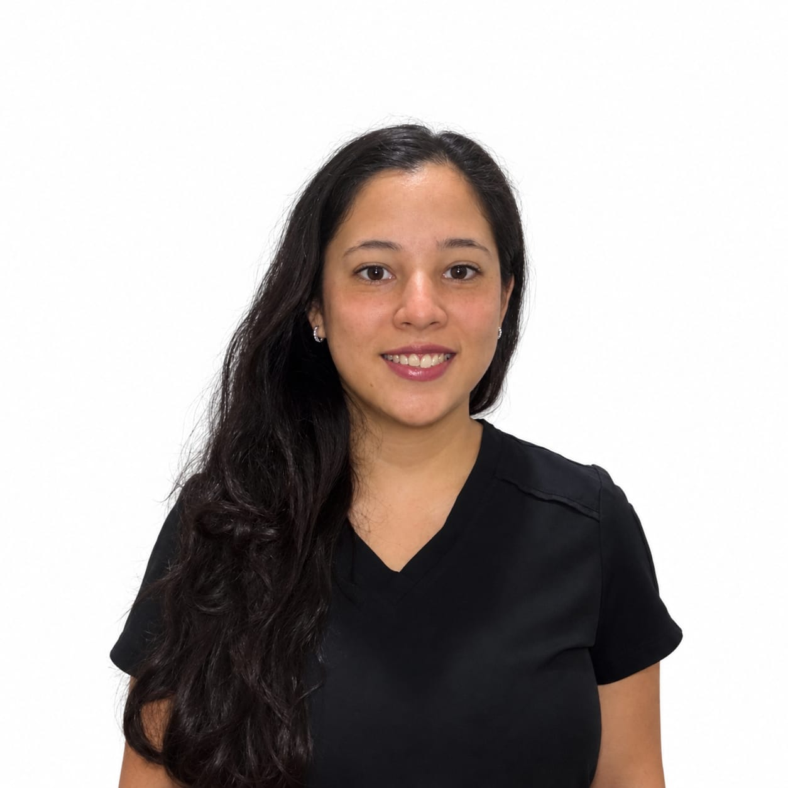
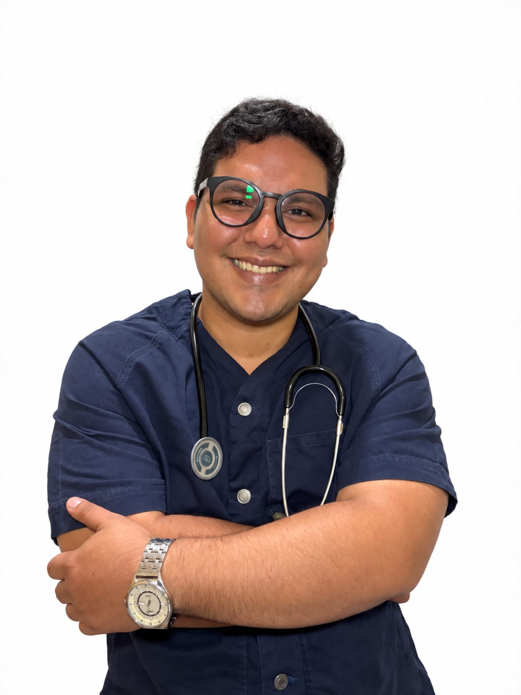

CILIS RESEARCH
Nosotros
Investigación, formación y colaboración para fortalecer la producción científica en ciencias de la salud.
FUNDADOR Y DIRECTORCIENCIA · INVESTIGACIÓN · COLABORACIÓN
Impulsar la ciencia también es construir comunidad.
CILIS RESEARCH reúne investigación, formación y colaboración para fortalecer la producción científica en ciencias de la salud.
Jose Sucre Dávila VásquezFundador y director de investigación clínica
PERSONAS DETRÁS DE CILIS
Nuestro equipo
Dra. Alexandra Illanes
- Médico general con formación en Atención Primaria de Salud.
- Experiencia hospitalaria y abordaje integral del paciente.
- Promoción de la salud y prevención de enfermedades.
- Participación en investigación científica, proyectos académicos y publicaciones.
- Búsqueda, análisis y aplicación de evidencia clínica.

Dra. Melissa Aragundi
- Integrante del equipo CILIS Research.
Dra. Génesis Soriano
- Integrante del equipo CILIS Research.
Dr. Mathyw Crespo
- Médico general con Maestría en Salud y Seguridad Ocupacional.
- Formación en atención primaria de salud.
- Experiencia en prevención de enfermedades crónicas y laborales.

Dr. Israel Guerrero
- Fundador y director de investigación clínica de CILIS.
- Presidente del Club de Estudiantes Investigadores de la Universidad de Guayaquil (CEI-UG).
- Ex ayudante de cátedra de Patologías Infecciosas (UG).
- Ex profesor de Biología en el Preuniversitario CESNAC.
- Más de 12 publicaciones científicas indexadas.
- Revisor por pares de Latindex Catálogo 2.0.
Dra. Belén
- Médico general con Maestría en Medicina Estética y Antienvejecimiento.
- División CILIS Cuenca, Ecuador.
- Directora de Divulgación Científica y Redes de la Fundación BRAINS.
- Experiencia clínica, quirúrgica y formación práctica en dermatología.
- Integra la práctica médica con investigación basada en evidencia.
Conoce los proyectos en los que puedes participar.
Ver convocatorias